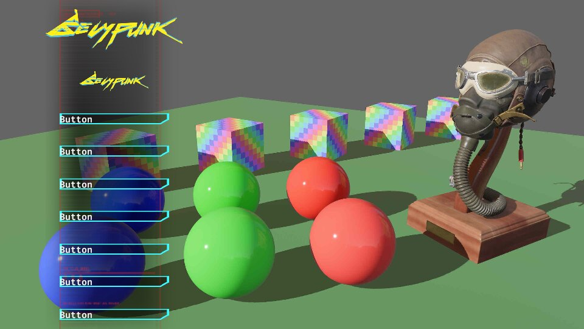
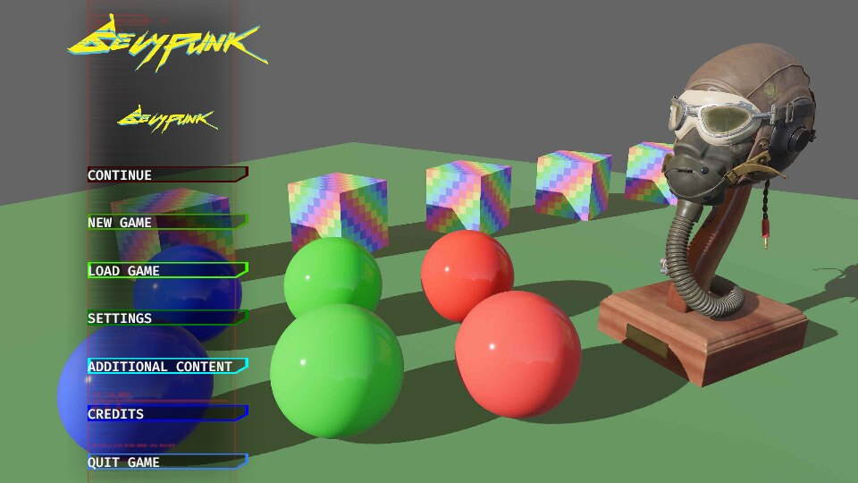

Define a menu using a chirp file
We will now use cuicui_chirp to define the UI. To do so, we need to add it
as a dependency first:
[dependencies]
# previous dependencies
# ...
# New dependency:
cuicui_chirp = "0.12.0"
The app setup requires adding cuicui_chirp::loader::Plugin::new::<UiDsl>(),
we also setup hot reloading by setting the asset plugin.
App::new()
.add_plugins((
DefaultPlugins.set(AssetPlugin { file_path, ..default() }),
cuicui_layout_bevy_ui::Plugin,
// You still need to add manually the asset loader for UiDsl!
cuicui_chirp::loader::Plugin::new::<UiDsl>(),
))
.add_systems(Startup, setup)
.run();Documentation
Methods available in
chirpfiles are the methods available in the choosen DSL type (in this case, it would be theUiDslmethods). Check the documentation page for the corresponding type you are using as DSL. All methods that accept an&mut selfare candidate.
The setup system, where we previously spawned the whole scene, is now
completely trivial, we just spawn a single entity with a ChirpBundle.
fn setup(mut cmds: Commands, serv: Res<AssetServer>) {
cmds.spawn((Camera2dBundle::default(), LayoutRootCamera));
cmds.spawn(ChirpBundle::new(serv.load("chirp_menu.chirp")));
}chirp_menu.chirp is located the assets/ folder.
This chapter assumes you’ve read the previous chapter. We will use it as a base for this.
So where to start? Well, let’s copy/past the code from the simple menu example
into chirp_menu.chirp and see what happens:
Root(screen_root row distrib_start main_margin(50.) image(&bg)) {
Column(column rules(px(100), pct(100)) main_margin(10.) image(&board)) {
TitleCard(width(pct(100)) image(&title_card))
TitleCard2(width(pct(50)) image(&title_card))
Entity(image(&button_bg) width(pct(80)) text("CONTINUE"))
Entity(image(&button_bg) width(pct(80)) text("NEW GAME"))
Entity(image(&button_bg) width(pct(80)) text("LOAD GAME"))
Entity(image(&button_bg) width(pct(80)) text("SETTINGS"))
Entity(image(&button_bg) width(pct(80)) text("ADDITIONAL CONTENT"))
Entity(image(&button_bg) width(pct(80)) text("CREDITS"))
Entity(image(&button_bg) width(pct(80)) text("QUIT GAME"))
}
}Of course this doesn’t work! But here the error format is different. The game
compiles, cuicui_chirp tries to load the file and displays errors it encountered
instead of spawning a scene:
Error: × Failed to load 'Handle<bevy_render::texture::image::Image>' from file '&button_bg':
│ No such file or directory (os error 2)
╭─[chirp_menu.chirp:10:1]
10 │ Entity(image(&button_bg) width(pct(80)) text("ADDITIONAL CONTENT"))
11 │ Entity(image(&button_bg) width(pct(80)) text("CREDITS"))
12 │ Entity(image(&button_bg) width(pct(80)) text("QUIT GAME"))
· ──────────
13 │ }
14 │ }
╰────
help: The error comes from the ParseDsl implementation.
Error: × Rule format was not recognized: 'pct(80)', rules end with '%', '*' or 'px'.
│ Examples: '53%', '0.35*' and '1024px'
╭─[chirp_menu.chirp:10:1]
10 │ Entity(image(&button_bg) width(pct(80)) text("ADDITIONAL CONTENT"))
11 │ Entity(image(&button_bg) width(pct(80)) text("CREDITS"))
12 │ Entity(image(&button_bg) width(pct(80)) text("QUIT GAME"))
· ───────
13 │ }
14 │ }
╰────
help: The error comes from the ParseDsl implementation.
The part of the error message we are the most interested in is the bit of text after Error:
× Failed to load ‘Handle<bevy_render::texture::image::Image>’ from file ‘&button_bg’:
│ No such file or directory (os error 2)
and
× Rule format was not recognized: ‘pct(80)’, rules end with ‘%’, ‘*’ or ‘px’.
│ Examples: ‘53%’, ‘0.35*’ and ‘1024px’
Don’t close the window! Chirp files are hot-reloadable, you can edit the file and see the effect live.
We have two kind of errors here:
- Argument to the
imagemethod. - Argument to
widthandrule.
For (1), methods that accept a Handle<T> in rust accept a string argument
in chirp files. For (2), chirp files use the
FromStr implementation on Rule to parse them, again, as the error message
states.
So let’s replace the variables from the DSL example with the file path and change the syntax on rules:
Root(screen_root row distrib_start main_margin(50) image("background.jpg")) {
Column(column rules(100px, 100pct) main_margin(10) image("board.png")) {
TitleCard(width(100pct) image("logo.png"))
TitleCard2(width(50pct) image("logo.png"))
Entity(image("button.png") width(80%) text("CONTINUE"))
Entity(image("button.png") width(80%) text("NEW GAME"))
Entity(image("button.png") width(80%) text("LOAD GAME"))
Entity(image("button.png") width(80%) text("SETTINGS"))
Entity(image("button.png") width(80%) text("ADDITIONAL CONTENT"))
Entity(image("button.png") width(80%) text("CREDITS"))
Entity(image("button.png") width(80%) text("QUIT GAME"))
}
}Save the file and …
New set of errors, but not as many.
We forgot to convert pct to % in some places. Let’s fix this and save again.

Rules syntax by context
So how to write cuicui_layout rules? Here is a table:
Note that pct, child and px are rust functions
and must be imported.
Templates
This is already good. And it was much faster than before! Didn’t even need to close and re-open the game once!
But, as before, we’d like to make this shorter. To do this, we’ll extract the button
entity into a template definition. In chirp, you define templates at the
beginning of the file with the fn keyword, and you use them like you would use
a rust macro:
// Define a template
fn button() {
Button(image("button.png") width(80%) text("Button"))
}
Root(screen_root row distrib_start main_margin(50) image("background.jpg")) {
Column(column rules(150px, 100%) main_margin(10) image("board.png")) {
TitleCard(width(100%) image("logo.png"))
TitleCard2(width(50%) image("logo.png"))
// Call it like a rust macro
button!()
button!()
button!()
button!()
button!()
button!()
button!()
}
}Again, all you need to do is hit the save shortcut in your text editor, and the changes show up directly on screen. (Or errors in the terminal, if any)

Template arguments
Well, we still want to have different names per button. Miracle, templates support parameters. They are like argument to rust functions:
// button_text is a parameter
fn button(button_text) {
// 'named' allows us to set the entity name dynamically
// vvvvv We can use the template parameter as argument to methods
// vvvvv vvvvvvvvvvv vvvvvvvvvvv
Entity(named(button_text) image("button.png") width(80%) text(button_text))
}And when calling the template, we pass an argument:
TitleCard(width(100%) image("logo.png"))
TitleCard2(width(50%) image("logo.png"))
// just pass the button name as argument
button!("CONTINUE")
button!("NEW GAME")
button!("LOAD GAME")
button!("SETTINGS")
button!("ADDITIONAL CONTENT")
button!("CREDITS")
button!("QUIT GAME")Template parameter substitution rules
Currently, it is not possible to use template parameters everywhere. See limitations.
Template extras
Now we want each button to have a different color. There are seven of them, like
the seven dwarfes, the seven fingers of the hand, and seven colors of the rainbow!
We could add a second parameter to our template, but instead, we’ll use a method extra:
button!("CONTINUE")(bg(red))
button!("NEW GAME")(bg(orange))
button!("LOAD GAME")(bg(yellow))
button!("SETTINGS")(bg(green))
button!("ADDITIONAL CONTENT")(bg(cyan))
button!("CREDITS")(bg(blue))
button!("QUIT GAME")(bg(violet))
A bit ugly. We should make "button.png" white so that it mixes with the rainbow
colors correctly.
In the chirp file, what happens here is that we are adding the bg(color) method
to the entity spawned by button!. In effect button!("CREDITS")(bg(blue)),
if we expand the template, becomes:
// bg(blue) method is added to the end vvvvvvvv
Entity(named("CREDITS") image("button.png") width(80%) text("CREDITS") bg(blue))Template extras also work with children nodes, within {}.
And that’s pretty much it when it comes to cuicui_chirp. Next, we will
add a bit of interactivity.